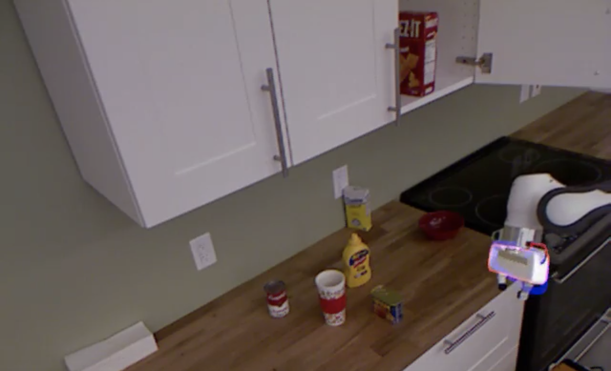
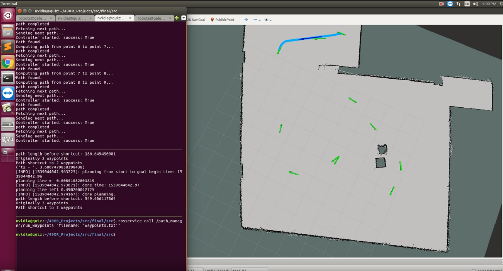
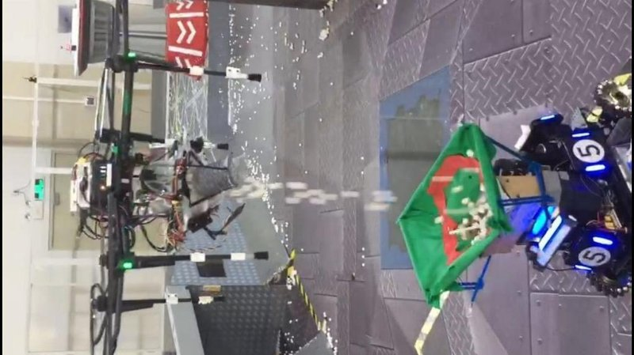

Lirui Wang's homepage
Lirui Wang is an undergraduate student with double major in Computer Science and Electrical Engineerig at the University of Washington, Seattle. He is working on both departmental honors and a minor in Math. He was a undergraduate researcher advised by Prof. Dieter Fox in Robotics and State Estimation Lab. He also works closely with Dr. Yu Xiang in Nvidia Robotics Lab. His research interests lie in Computer Vision (3D Vision) and Robotics. He also has broad experience in Graphics, Control, Optimization, and DSP.
Contact me at liruiw [at] cs [dot] washington [dot] edu.
[CV] [Github]Research Projects
 | 6D Grasp Pose Synthesis Lirui Wang, Yu Xiang and Dieter Fox In European Conference on Computer Vision (ECCV), vol. 7572, pp. 86-101, 2012. PDF, Bibtex, Poster, Slides, Project |
Education
Selected Courses
- EE 474 (UW, Winter 2019): Embedded Systems
- EE 447 (UW, Autumn 2018): Control Theory
- EE 442 (UW, Winter 2019): Digital Signal Processing
- MATH 464, 465 (UW, Autumn 2018 -- Winter 2019): Numerical Analysis
- MATH 516 (UW, Spring 2019): Numerical Optimization
- CSE 490 Z1 (UW, Winter 2019): Modern Algorithm Toolbox
- CSE 490 R (UW, Spring 2019): Robotics
- CSE 455 (UW, Spring 2018): Computer Vision
- CSE 457 (UW, Spring 2018): Computer Graphics
- CSE 490 G1 (UW, Autumn 2018): Deep Learning
Course Projects
 | Drone Control Simulation Control System Analysis |
|  | 6D Object Pose Tracking with the Deep Iterative Matching Network Deep Learning Poster, PDF, Demo 1, Demo 2 |
 | Drowsiness Driving System Embedded System and Design PDF, Demo |
|  | Indoor Navigation Robotics Demo |
 | Depth and Flow Methods Study Computer Vision Poster |
{kind=link}
{kind=link}
Fun Projects
|  | Drone Localization DJI Intern |
 | SoundScape Project UW ACME LAB |
{kind=link}